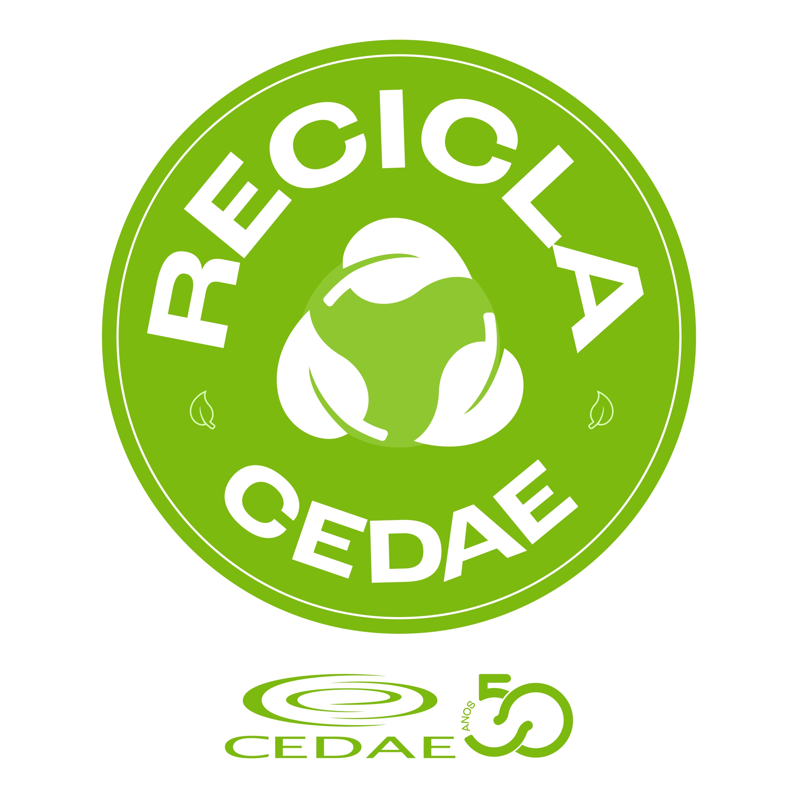

Programa institucional
Recicla CEDAE · Fase 2
Sistema de pontuação com saldo disponível para resgate, controle de estoque e operação técnica de pesagens e premiações.
Nesta fase, cada pesagem gera pontos para o participante. Os pontos podem ser acumulados, mantidos em saldo e usados no resgate de prêmios conforme a escolha do participante e a confirmação da equipe técnica.
Camada pública
Explicação do sistema de pontuação, catálogo de prêmios e principais indicadores do programa na Fase 2.
Como funciona
Cartão de pontos do Recicla CEDAE
Cada pesagem gera pontos. O participante pode optar por resgatar prêmios menores ou acumular saldo para prêmios de maior valor. O histórico total é mantido mesmo após o resgate.
A pesagem registrada pela equipe técnica é convertida diretamente em pontos.
Os pontos só saem do saldo quando o resgate é confirmado pela equipe técnica.
O total histórico do participante permanece registrado mesmo após a retirada dos prêmios.
Camada gerencial
Acompanhamento dos pontos gerados, resgates realizados, saldos disponíveis e leitura do desempenho por diretoria.
Resgates por prêmio
Estoque atual
Top 10 por pontos totais
Top 10 por saldo disponível
Desempenho por diretoria
Participantes · Fase 2
0 registros| ID | Diretoria | Pontos totais | Pontos resgatados | Saldo | Broches | Copos | Mochilas |
|---|
Camada técnica
Operação da Fase 2 com lançamento de pesagens, registro de resgates e atualização local dos indicadores do módulo.
Lançar pesagem
Registrar resgate
Histórico técnico de movimentos
0 movimentos| Data | ID | Tipo | Origem | Pontos | Prêmio | Obs. |
|---|